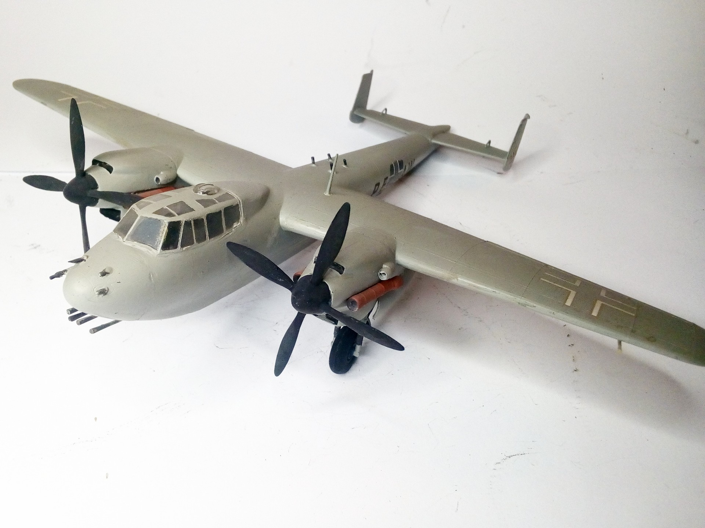
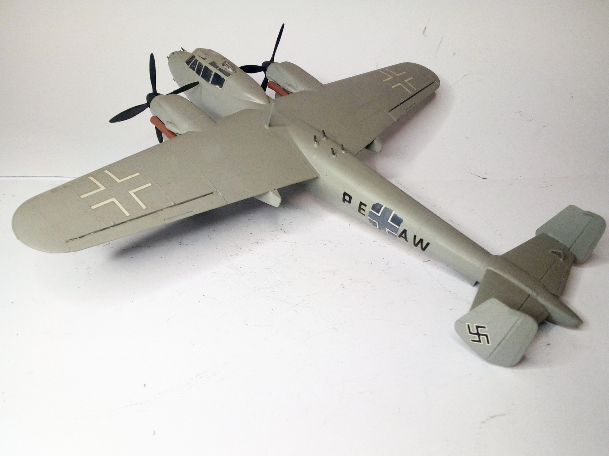

Aerei · scale model archive
Dornier Do217 N2
Dornier Do217 N2 — Kit: conversion from Airfix, Scale: 1/72. Ultimate night fighter version of the Do217, streamlined fuselage, 4x20mm 'Schräge Musik'…

Photo gallery

English description
Ultimate night fighter version of the Do217, streamlined fuselage, 4x20mm 'Schräge Musik' cannons #Do217N2
#1/72 #conversion
Descrizione italiana
Versione definitiva da caccia notturno del Do217, con fusoliera aerodinamica e quattro cannoni da 20 mm “Schräge Musik”. #Do217N2 #1/72 #conversion